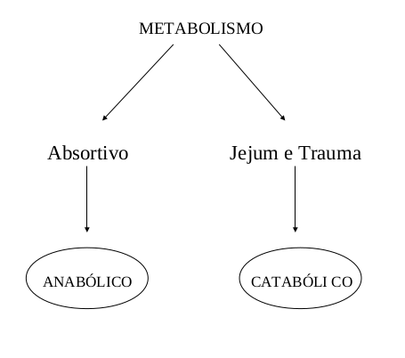
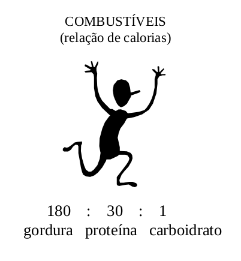
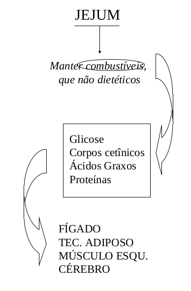
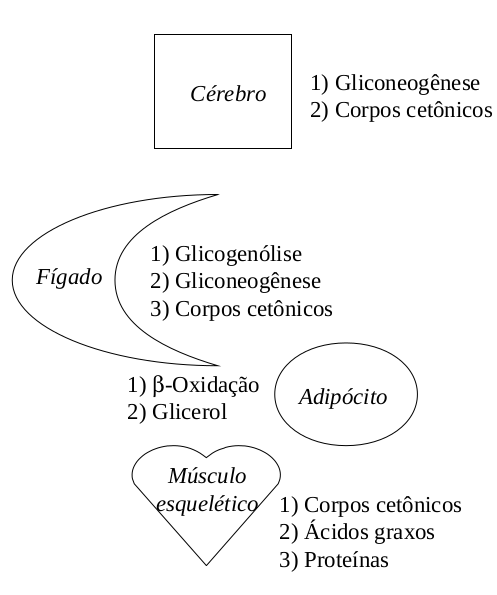
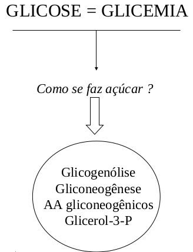
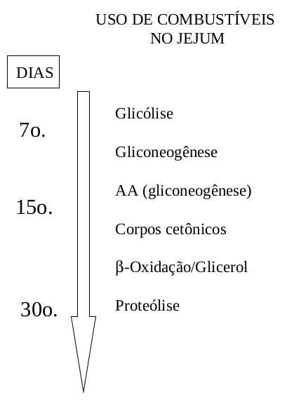
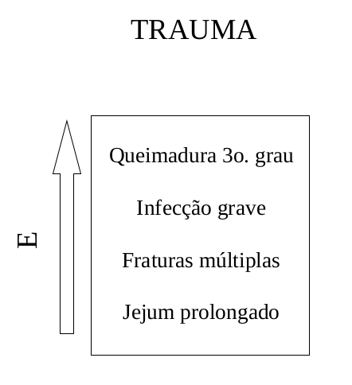

Metabolismo na Absorção, Jejum, Estresse e Trauma
Introdução
O metabolismo dos tecidos geralmente possui uma bifurcação quanto à sua atividade. Ou ele é anabólico (construção de glicogênio, gorduras e proteínas) ou ele é catabólico (degradação de glicogênio, gorduras e proteínas). O que vai ditar uma característica ou outra é o estado fisiológico ou patológico em que ele se encontra. Ou seja, o que vai ditar se o organismo precisa quebrar seus constituintes bioquímicos pra produzir energia, ou se vai utilizar alguns de seus produtos para construir reservas energéticas, são estados como absorção, jejum, estresse, trauma, hipoglicemia, obesidade, gestação, alcoolismo, diabetes e lactação, dentre outros.

Este texto trata dos 4 primeiros. À excessão do estado anabólico absortivo, comum nas primeiras horas após as refeições, os demais são essencialmente catabólicos. O estado absortivo é aquele no qual o organismo acabou de se alimentar, e as macromoléculas, já quebradas pelo trato gastrointestinal, estão liberando monossacarídios, aminoácidos, nucleotídeos, colesterol e ácidos graxos livres para absorção junto ao epitélio intestinal. Neste sentido, os monossacarídios tais como glicose, frutose e galactose estão sendo metabolizados para produção de energia (glicólise, ciclo de Krebs e cadeia respiratória aumentadas), e seus excessos, assim como aminoácidos, nucleotídeos, colesterol e ácidos graxos, para construção respectiva de glicogênio (a partir da glicose em excesso, rota denominada por glicogenogênese), proteínas, ácidos nucléicos, sais biliares e gorduras (lipogênese).
Os estados de jejum, estresse e trauma, por sua vez, são catabólicos, o que significa que o organismo precisa quebrar nutrientes próprios, para manter-se funcionando adequadamente. O que difere bioquimicamente o jejum do estresse e esse do trauma, é basicamente a intensidade com que o catabolismo ocorre nesses processos. Entretanto, o que há de comum em todos eles, é que o organismo precisa de energia imediata. Para isto, quebra o glicogênio para obter glicose (glicogenólise), transforma alguns produtos em glicose (gliconeogênese), quebra gorduras para obter acetil CoA (lipólise ou \(\beta\)-oxidação), quebra corpos cetônicos, pequenos ácidos orgânicos, para produzir acetil CoA e, em casos mais graves, quebra também proteínas para liberar aminoácidos que serão transformados em glicose. A glicose assim obtida por diversos meios mantém os níveis de glicemia no sangue, ao passo que o acetil CoA é quebrado para fornecer energia (ATP).

A demanda dessa energia depende do estado metabólico. Assim, o trauma exige mais do que o jejum prolongado, o qual exige mais do que estresse, que exige mais do que o jejum simples.

O maior consumo de energia do trauma está também relacionado com o aumento de células de defesa do organismo (monócitos e macrófagos, linfócitos), bem como de proteínas especiais, as chamadas proteínas de fase aguda do trauma. A exigência energética do trauma também depende, se se trata um corte simples no dedo, ou de uma queimadura da 3o. grau.
Detalhes
Metabolismo no estado absortivo.
A absorção de nutrimentos depende da disponibilidade de substratos (minutos), de modificações alostéricas de enzimas (minutos, ex: frutose 2,6-diP na fosfofrutoquinase), de modificações covalentes em enzimas (horas, ex: fosforilação de Ser, Thr e Tyr, como na glicogênio fosforilase e lipase sensível a hormônio), e de modificações na síntese de enzimas (dias). Os principais orgãos em que ocorre o metabolismo absortivo são o fígado, tecido adiposo, músculo esquelético e cérebro. O metabolismo no estado absortivo envolve principalmente o fígado (tecido produtor de glicose). Com relação ao metabolismo de carboidratos da fase pós-prandial, que se sucede às refeições, ocorre o consumo de glicose devido ao aumento na fosforilação desta pela glicoquinase (ou hexoquinase, extra-hepática), aumento na síntese de glicogênio (ativação da glicogênio sintase), aumento da via das pentoses (disponibilidade de glicose-6-P), glicemia geral aumentada (secreção de insulina), e redução da gliconeogênese (inativação da piruvato carboxilase).
No estado absortivo as gorduras hepáticas estão com a síntese de seus ácidos graxos aumentada (disponibilidade de acetil CoA e NADPH das pentoses), assim como a de triacilglicerol (disponibilidade de acil CoA graxa e glicerol-3-P). Em humanos, a síntese de ácidos graxos é relevante apenas no período absortivo. O metabolismo de aminácidos na fase pós-prandial e absortiva envolve uma degradação aumentada (re-absorção ou deaminação), à excessão de aminoácidos de cadeia ramificada (Leu, Ile, Val), que são utilizados pelo metabolismo muscular.
No tecido adiposo, ocorre um influxo de glicose aos adipócitos, e aumento da glicólise, com consequente disponibilidade de glicerol-3-P para a síntese de triacilgliceróis. Também ocorre aumento da via das pentoses, produzindo NADPH para a síntese daqueles. A síntese de novo de ácidos graxos, imperceptível em humanos, aumenta, concomitantemente com a de lipoproteínas, em especial os quilomicra, e a atividade da lipase lipoprotéica. Contrariamente, os teores da lipase sensível a hormônio diminuem (redudção da \(\beta\)-oxidação). No músculo esquelético no estado absortivo, há um metabolismo de carboidratos voltado para o transporte aumentado de glicose (no estado pós-absortivo, são utilizados ácidos graxos e corpos cetônicos como combustíveis), e para o aumento da síntese de glicogênio (disponibilidade de glicose-6-P).
Concomitantemente, ocorre uma liberação de ácidos graxos (lipase lipoprotéica e quilomicra), e síntese e captação aumentada de aminoácidos de cadeia ramificada. Outro orgão importante no metabolismo absortivo é o cérebro, que utiliza primeiramente a glicose e, no estado pós-absortivo, corpos cetônicos. No cérebro não há depósitos de triacilglicerol, pois não ocorre transposição da barreira hemato-encefálica por ácidos graxos.

Metabolismo no jejum.
O jejum se dá pela incapacidade do organismo de obter alimento, desejo de perda de peso ou situações clínicas. Enquanto que o estado absortivo constitui um processo anabólico, o jejum (e também o estresse e o trauma) constitui um processo catabólico. Neste caso, os substratos energéticos disponíveis para degradação são encontrados nos próprios tecidos. Os depósitos energéticos envolvem o de gordura (15Kg, 135000Kcal), o proteínas (6Kg, 24000Kcal), e o de glicogênio (0,2Kg, 800Kcal), numa proporção de 180:30:1.
A lógica orgânica do jejum é a de se produzir glicose a todo custo, através de rotas bioquímicas que envolvem a glicogenólise, gliconeogênese, produção de glicerol-3-P e utilização de aminoácidos glicogênicos. Além da glicose gerada por esses processos, o organismo faz uso de outros combustíveis, tais como corpos cetônicos, ácidos graxos e proteínas. A sequência média dessas utilizações inclui a glicogenólise e gliconeogênese (até o 7o. dia), a utilização da \(\beta\)-oxidação, de corpos cetônicos, aminoácidos glicogênicos, e glicerol (até o 15o. dia), e a proteólise (a partir do 20o. dia). Os orgãos do metabolismo em jejum envolvem, como no absortivo, o fígado, tecido adiposo, musculatura esquelética e cérebro.

O fígado em jejum trabalha com um aumento da glicogenólise (estoques humanos de até 24h) e da gliconeogênese (5h após a refeição, com fontes a partir de aminoácidos, glicerol e lactato). Ocorre também um aumento da \(\beta\)-oxidação de ácidos graxos e síntese de corpos cetônicos (reduz o uso de proteínas com fonte dietética). O tecido adiposo em jejum reduz o transporte de glicose (baixos níveis de insulina), aumenta a \(\beta\)-oxidação (atividade aumentada da lipase sensível a hormônio), e a liberação de ácidos graxos (transporte albumínico). Concomitantemente, os adipócitos reduzem a síntese de triacilglicerol (atividade reduzida da lipase lipoprotéica). Na musculatura esquelética em jejum o transporte e catabolismo de glicose estão deprimidos, fazendo com que o organismo passe a utilizar primeiramente os corpos cetônicos e ácidos graxos como combustíveis (3 semanas) e, posteriormente, as proteínas. Proteólise também é verificada nos primeiros dias do jejum. O cérebro em jejum utiliza glicose (primeiros dias) e posteriormente os corpos cetônicos (3 semanas).

Estresse e trauma.
Nestas condições ocorre um quadro hipermetabólico com consequente aumento da temperatura corporal. A função primária reside na cicatrização e recuperação do organismo atingido. As características metabólicas do estresse e do trauma envolvem um aumento da liberação de aminoácidos de proteínas musculares (proteólise), um aumento da gliconeogênese hepática (hiperglicemia), e um aumento da síntese de proteínas específicas, da fase aguda da resposta inflamatória, e do tecido lesado. Os mediadores químicos da resposta lesional incluem as citoquinas (interleucina, TNF - fator de necrose tumoral), os hormônios contra-regulatórios e a insulina (supressão da síntese de corpos ctônicos e estimulação da lipogênese).
A mobilização energética se dá diferentemente no trauma, aumentando progressivamente do jejum parcial, jejum prolongado, pós-operatório, fraturas múltiplas, infecção grave, até queimaduras. No estresse metabólico aumentam os níveis sanguíneos de cortisol, glicagon, catecolaminas e hormônio de crescimento, GH. Ocorre proteólise e redução na síntese de proteínas devido a uma redução não explicada de glutamina intracelular muscular. O balanço nitrogenado negativo de pacientes lesionados ou infectados pode ser mediado por proteínas de monócitos e linfócitos, como interleucina-1 (IL-1), interleucina-6 (IL-6) e fator de necrose tumoral (TNF-\(\alpha\)).

Essas citocinas induzem febre e outras alterações metabólicas. Enquanto a IL-1 ativa a proteólise muscular, a IL-6 estimula a síntese de proteínas hepáticas de fase aguda. Essas proteínas incluem fibrinogênio, sistema do complemento, fatores de coagulação, e $\(2-macroglobulina, as quais atuam contra defesa e infecção. O TNF-\)$, por sua vez, suprime a síntese de gordura no adipócito, impede a captação de gordura circulante (inibição da lipoproteína lipase), estimula a lipólise, inibe a liberação de insulina e promove resistência insulínica. Essas citocinas parecem ser responsáveis por grande parte do desgaste verificado nas infecções crônicas.
Síntese
Metabolismo no estado absortivo
- Mecanismos: disponibilidade de substratos (minutos), modificação alostérica de enzimas (minutos, ex: frutose 2,6-diP na fosfofrutoquinase), modificação covalente de enzimas (horas, ex: fosforilação de Ser, Thr e Tyr, como na glicogênio fosforilase e lipase sensível a hormônio), modificação na síntese de enzimas (dias);
- Fígado (tecido produtor de glicose); na fase pós-prandial, consumo de glicose devido a fosforilação aumentada da mesma (glicoquinase), neoglicogênese (ativação da glicogênio sintase), aumento da via das pentoses (alta glicose-6-P), glicemia aumentada (insulina), e redução da gliconeogênese (inativ. da piruvato carboxilase);
- Metabolismo de gorduras hepáticas: síntese aumentada de ácidos graxos (disponibilidade de acetil CoA e NADPH das pentoses; obs: em humanos, importante apenas no período absortivo) e de triacilglicerol (disponibilidade de acil CoA graxa e glicerol-3-P);
- Metabolismo de aminoácidos hepáticos: degradação aumentada (re-absorção ou deaminação); excessão: aminoácidos de cadeia ramificada (metabolização muscular);
- Tecido adiposo; carboidratos: influxo de glicose ao adipócitos, aumento da glicólise, com consequente disponibilidade de glicerol-3-P para a síntese de triacilgliceróis, e aumento da via das pentoses, produzindo NAPH também para síntese de triacilgliceróis; lipídios: síntese de novo de ácidos graxos (imperceptível em humanos), aumento de quilomícras, síntese aumentada de triacilgliceróis (lipase lipoprotéica) e redução da \(\beta\)-oxidação (lipase sensível a hormônio);
- Músculo esquelético (tecido oxidativo); carboidratos: transporte aumentado de glicose (no estado pós-absortivo, ácidos graxos e corpos cetônicos como combustíveis), aumento da neoglicogênese (disponibilidade de glicos-6-P); lipídios: liberação de ácidos graxos (lipase lipoprotéica e quilimicras); proteínas: síntese aumentada, captação aumentada de aminoácidos de cadeia ramificada;
- Cérebro; carboidratos: glicólise e, no estado pós-absortivo, corpos cetônicos; lipídios: sem depósitos de triacilglicerol, sem transposição da barreira hemato-encefálica por ácidos graxos.
Metabolismo no estado de jejum, estresse, e trauma
Jejum
- Conceito: incapacidade de obter alimento, desejo de perda de peso ou situações clínicas;
- substratos energéticos disponíveis pela degradação de tecidos;
- Depósitos calóricos: gordura (15 kg, 135000 kcal), proteína (6 kg, 24000 kcal), e glicogênio (0,2 kg, 800 kcal); ou proporção de 180:30:13;
- Fígado no jejum; aumento da glicogenólise (estoques até 24hs) e da gliconeogênese (5h após a refeição, com fontes em aminoácidos, glicerol e lactato); aumento da \(\beta\)-oxidação e da síntese de corpos cetônicos (reduz o uso de proteínas como fonte);
- Tecido adiposo no jejum; redução no transporte de glicose (baixa insulina), aumento da β-oxidação (lipase sensível a hormônio) e da liberação de ácidos graxos (transporte por albumina), redução da síntese de triacilglicerol (lipase lipoprotéica);
- Músculo esquelético no jejum; transporte e catabolismo de glicose deprimidos, uso de corpos cetônicos, em primeiro lugar (3 semanas) e de ácidos graxos, proteólise apenas nos primeiros dias;
- Cérebro em jejum: glicose (dias), e corpos cetônicos (3 semanas);
Estresse e trauma
- Conceito: quadro hipermetabólico com consequente aumento da temperatura corporal;
- Função: cicatrização e recuperação;
- Características: aumento da liberação de aminoácidos (proteínas musculares), gliconeogênese hepática (hiperglicemia), bem como da síntese de proteínas específicas (da fase aguda da resposta inflamatória, e do tecido lesado);
- Mobilização de energia: queimadura > infecção grave > fraturas múltiplas > pós-operatório > jejum parcial
- Mediadores de resposta à lesão: aumento de citoquinas (interleucina, fator de necrose tumoral), de hormônios contra-regulatórios, e de insulina (supressão da síntese de corpos cetônicos e estimulação da lipogênese).